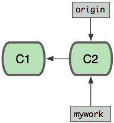
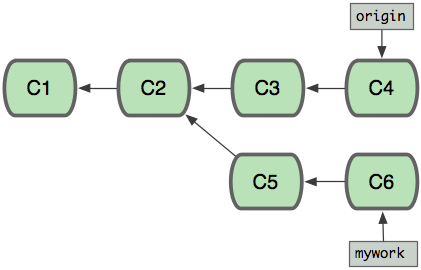
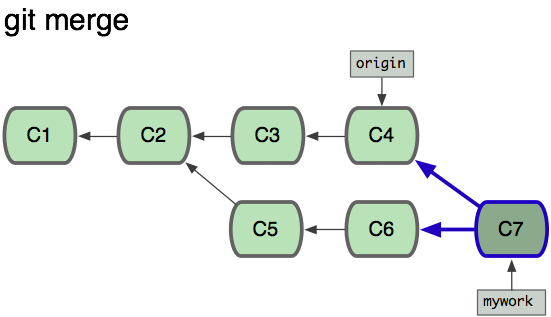
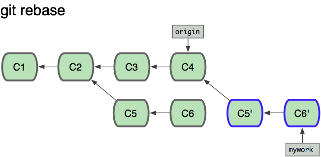
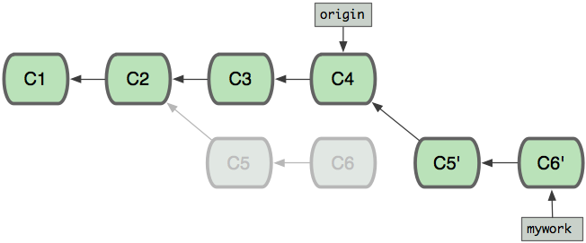
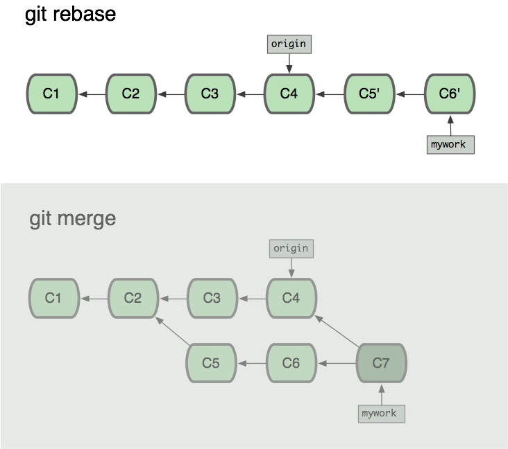

Recombinaison (rebase)
Supposons que vous avez créé une branche "mywork" sur une branche de suivi distante "origin".
$ git checkout -b mywork origin

Maintenant travaillez un peu dessus, en créant 2 commits.
$ vi fichier.txt
$ git commit
$ vi autrefichier.txt
$ git commit
...
Pendant ce temps, quelqu'un d'autre travaille en créant aussi 2 nouveaux commits sur la branche d'origine. Cela signifie que les 2 branches 'origine' et 'mywork' ont avancé, et elle ont aussi divergé.

À ce moment, vous pouvez utiliser "pull" pour merger vos modifications ; le résultat créera un nouveau commit 'merge', comme ceci :

Cependant, si vous préférez garder l'historique de 'mywork' sous l'aspect d'une simple série de commits sans 'merge', vous pouvez aussi utiliser git rebase :
$ git checkout mywork
$ git rebase origin
Cette commande va retirer chacun de vos commit sur 'mywork', en les sauvegardant temporairement comme des patches (dans le dossier ".git/rebase"), puis mettre à jour la branche 'mywork' avec la dernière version de la branche 'origin', et enfin appliquer chaque patch sauvegardé à cette nouvelle version de 'mywork'.

Une fois que la référence ('mywork') est mise à jour jusqu'au dernier objet commit créé, vos anciens commits seront abandonnés. Ils seront sûrement effacés si vous lancez la commande de ramasse-miettes. (voir git gc)

Maintenant nous pouvons voir la différence de l'historique entre l'exécution d'un merge et l'exécution d'une recombinaison (rebase) :

Dans le processus d'une recombinaison, des conflits peuvent se produire. Dans ce cas, le processus s'arrêtera et vous permettra de réparer ces conflits ; après les avoir fixés, utilisez "git-add" pour mettre à jour l'index avec ce nouveau contenu, puis, au lieu de lancer git-commit, lancez juste :
$ git rebase --continue
et git continuera d'appliquer le reste des patches.
À n'importe quel moment, vous pouvez utiliser l'option --abort pour
annuler le processus et retourner au même état de 'mywork' qu'au
démarrage de la recombinaison :
$ git rebase --abort